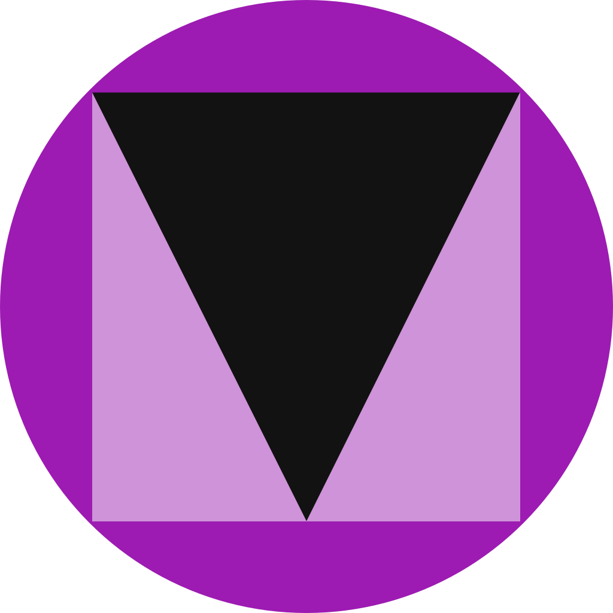

<p-sidebar [(visible)]="visible" position="right" [transitionOptions]="'.3s cubic-bezier(0, 0, 0.2, 1)'" styleClass="layout-config-sidebar w-20rem">
    <h5>Escala</h5>
    <div class="flex align-items-center">
        <button icon="pi pi-minus" type="button" pButton (click)="decrementScale()" class="p-button-text p-button-rounded w-2rem h-2rem mr-2" [disabled]="scale === scales[0]"></button>
        <div class="flex gap-2 align-items-center">
            <i class="pi pi-circle-fill text-300" *ngFor="let s of scales" [ngClass]="{'text-primary-500': s === scale}"></i>
        </div>
        <button icon="pi pi-plus"  type="button" pButton (click)="incrementScale()" class="p-button-text p-button-rounded w-2rem h-2rem ml-2" [disabled]="scale === scales[scales.length - 1]"></button>
    </div>

    <ng-container *ngIf="!minimal">
        <h5>Estilo do menu</h5>
        <div class="flex">
            <div class="field-radiobutton flex-1">
                <p-radioButton name="menuMode" value="static" [(ngModel)]="menuMode" inputId="mode1"></p-radioButton>
                <label for="mode1">Estático</label>
            </div>
            <div class="field-radiobutton">
                <p-radioButton name="menuMode" value="overlay" [(ngModel)]="menuMode" inputId="mode2"></p-radioButton>
                <label for="mode2">Sobreposto</label>
            </div>
        </div>
    </ng-container>

    <h5>Estilo da página</h5>
    <div class="grid mt-2 border-round p-2 w-12rem gap-7">
        <button class="p-link ml-2 w-2rem h-2rem" (click)="changeTheme('md-light-deeppurple', 'light')" title="Modo Claro">
            
        </button>
        <button class="p-link w-2rem h-2rem" (click)="changeTheme('md-dark-deeppurple', 'dark')" title="Modo Escuro">
            
        </button>
    </div>
</p-sidebar>
